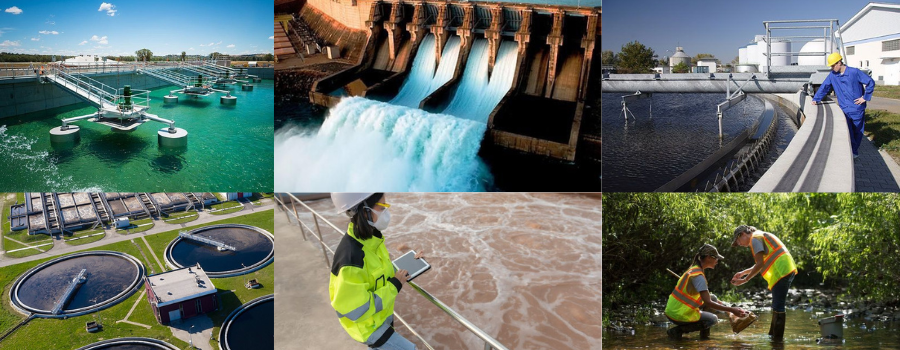

Sobre Nós
EcoPurify combina inovação tecnológica com colaboração comunitária e um sistema de recompensas, proporcionando uma solução abrangente e eficaz para o tratamento de resíduos na água, ajudando a preservar um dos recursos mais preciosos do planeta.
Gostou da Nossa Empresa?
Na EcoPurify, dedicamos nosso compromisso à excelência no tratamento de águas. Com décadas de experiência e tecnologia de ponta, oferecemos soluções personalizadas para atender às necessidades únicas de nossos clientes. Nossa equipe de especialistas em tratamento de água desenvolve e implementa sistemas avançados que garantem a pureza e a qualidade da água em diversas aplicações, desde processos industriais até o abastecimento público. Além disso, estamos comprometidos com a sustentabilidade ambiental. Utilizamos métodos inovadores para minimizar o impacto ambiental de nossas operações, garantindo um futuro mais limpo e saudável para as gerações futuras. Junte-se a nós na missão de preservar esse recurso vital. Entre em contato hoje mesmo para saber mais sobre como podemos ajudar a transformar a gestão da água na sua empresa. Juntos, podemos fazer a diferença. #ÁguaPura #Sustentabilidade #TratamentoDeÁguas